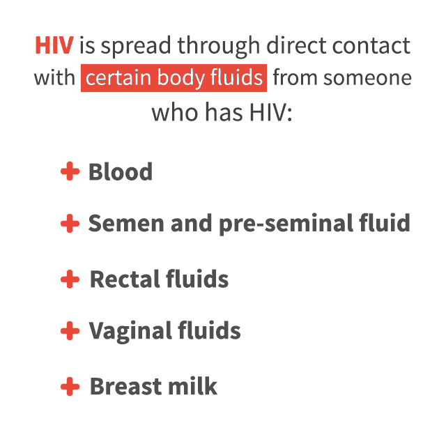
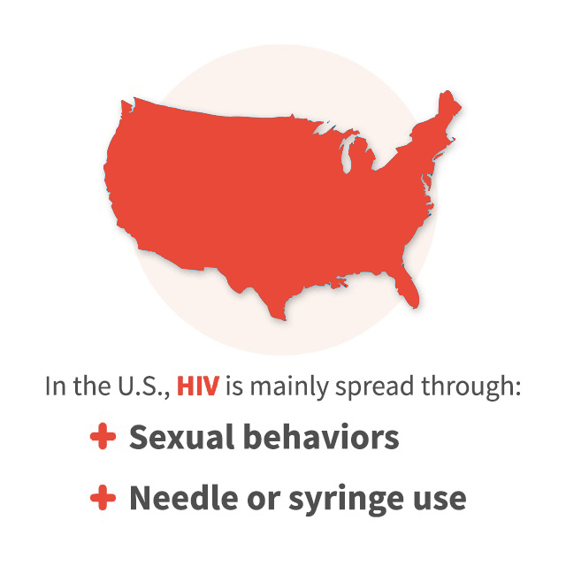
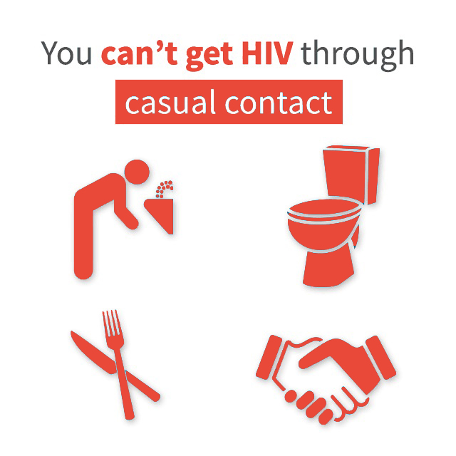

How Is HIV Spread?
You can get or transmit HIV only through specific activities. Most commonly, people get or transmit HIV through sexual behaviors and needle or syringe use.
HIV is not spread easily. Only certain body fluids from a person who has HIV can transmit HIV:
- Blood
- Semen (cum)
- Pre-seminal fluid (pre-cum)
- Rectal fluids
- Vaginal fluids
- Breast milk
If you think you may have been exposed to HIV, get tested. You can get tested at your healthcare provider’s office, a clinic, and other locations. You can also get a HIV home test kit from your local pharmacy.
Ways HIV Is Transmitted
In the United States, HIV is spread mainly by:
- Having anal or vaginal sex with someone who has HIV without using a condom or taking medicines to prevent or treat HIV.
- Anal sex is the highest-risk sexual behavior. For the HIV-negative partner, receptive anal sex (“bottoming”) is riskier than insertive anal sex (“topping”).
- Vaginal sex is the second highest-risk sexual behavior.
- Sharing needles or syringes, rinse water, or other equipment (“works”) used to prepare injection drugs with someone who has HIV. HIV can live in a used needle up to 42 days depending on temperature and other factors.
- From mother to child during pregnancy, birth, or breastfeeding. Although the risk can be high if a mother is living with HIV and not taking medicine, recommendations to test all pregnant women for HIV and start HIV treatment immediately have lowered the number of babies who are born with HIV.
- By being stuck with an HIV-contaminated needle or other sharp object. This is a risk mainly for health care workers.
- Oral sex—putting the mouth on the penis (fellatio), vagina (cunnilingus), or anus (rimming). In general, there is little to no risk of getting HIV from oral sex. But transmission of HIV, though extremely rare, is theoretically possible if an HIV-positive man ejaculates in his partner’s mouth during oral sex. To learn more about how to lower your risk, see CDC’s Oral Sex and HIV Risk.
- Receiving blood transfusions, blood products, or organ/tissue transplants that are contaminated with HIV. This was more common in the early years of HIV, but now the risk is extremely small because of rigorous testing of the U.S. blood supply and donated organs and tissues.
- Eating food that has been pre-chewed by an HIV-infected person. The contamination occurs when infected blood from a caregiver’s mouth mixes with food while chewing. The only known cases are among infants.
- Being bitten by a person with HIV. Each of the very small number of documented cases has involved severe trauma with extensive tissue damage and the presence of blood. There is no risk of transmission if the skin is not broken.
- Contact between broken skin, wounds, or mucous membranes and HIV-infected blood or blood-contaminated body fluids.
- Deep, open-mouth kissing if the person with HIV has sores or bleeding gums and blood from the HIV-positive partner gets into the bloodstream of the HIV-negative partner. HIV is not spread through saliva.
HIV is not spread by… HIV does not survive long outside the human body (such as on surfaces) and it cannot reproduce outside a human host. It is not spread by:
- Air or water
- Mosquitoes, ticks or other insects
- Saliva, tears, or sweat that is not mixed with the blood of an HIV-positive person
- Shaking hands, hugging, sharing toilets, sharing dishes/drinking glasses, or closed-mouth or “social” kissing with someone who is HIV-positive
- Drinking fountains
- Other sexual activities that don’t involve the exchange of body fluids (for example, touching).
HIV Treatmnet Reduces Transmission Risk People with HIV who are using antiretroviral therapy (ART) consistently and who have achieved viral suppression (having the virus reduced to an undetectable level in the body) are very unlikely to transmit the virus to their uninfected partners. However, there is still some risk of transmission, so even with an undetectable viral load, people with HIV and their partners should continue to take steps to reduce the risk of HIV transmission.
I Have HIV, Does That Mean I Have AIDS?
No. The terms “HIV” and “AIDS” can be confusing because both terms refer to the same disease. However, “HIV” refers to the virus itself, and “AIDS” refers to the late stage of HIV infection, when an HIV-infected person’s immune system is severely damaged and has difficulty fighting diseases and certain cancers. Before the development of certain medications, people with HIV could progress to AIDS in just a few years. But today, most people who are HIV-positive do not progress to AIDS. That’s because if you have HIV and you take ART consistently, you can keep the level of HIV in your body low. This will help keep your body strong and healthy and reduce the likelihood that you will ever progress to AIDS. It will also help lower your risk of transmitting HIV to others